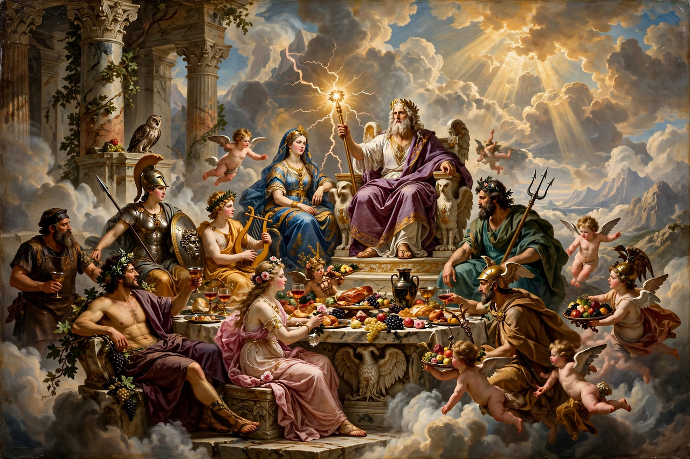

From Wikipedia, the free encyclopedia
| Greek mythology | |
|---|---|
| Origin | Ancient Greece; sources include Hesiod's Theogony, Homer, Apollodorus |
| Principal deities | The twelve Olympians, led by Zeus |
| Sacred centre | Mount Olympus |

Greek mythology is the body of myths and legends of the ancient Greeks concerning their gods and heroes, the nature of the world, and the origin and meaning of their rituals. From Hesiod's Theogony (c. 700 BC), which orders the generations of gods from Chaos and Gaia to the Olympians, through Homer's Iliad and Odyssey, the myths formed the shared imaginative world of Greek culture and, through Rome, of the Western tradition.
Twelve gods dwell on Mount Olympus under Zeus, hurler of thunderbolts: Hera, Poseidon, Demeter, Athena, Apollo, Artemis, Ares, Aphrodite, Hephaestus and Hermes, with Dionysus or Hestia completing the count and Hades ruling the underworld below. Around them cluster myths of heroes — Heracles and his twelve labours, Perseus and Medusa, Theseus and the Minotaur, Jason and the Argonauts, Achilles and Odysseus — and of mortals punished for hubris, from Prometheus (who stole fire for mankind) to Icarus and Narcissus. Greek myth remains endlessly retold in literature, art, psychology (Oedipus, narcissism) and popular culture.